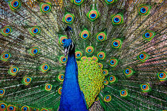

Peacock
1) Peacock is one of the most beautiful birds of the earth.
2) Peacock usually has blue colour and its feathers having mixture of blue, green, golden colours.
3) Peacocks are found in India, Sri Lanka, Indonesia, and Africa etc.
4) Peacocks look attractive due to their colourful feathers.
2) Peacock usually has blue colour and its feathers having mixture of blue, green, golden colours.
3) Peacocks are found in India, Sri Lanka, Indonesia, and Africa etc.
4) Peacocks look attractive due to their colourful feathers.

Chicken
Chicken (Gallus gallus domesticus) is a term which refers to the male of a number of poultry. It is raised in many places for its meat and eggs. They are usually kept by humans as livestock. Some breeds of chickens can fly for a short distance.

Kangaroo
Kangaroos have large, powerful hind legs, large feet adapted for leaping, a long muscular tail for balance, and a small head.